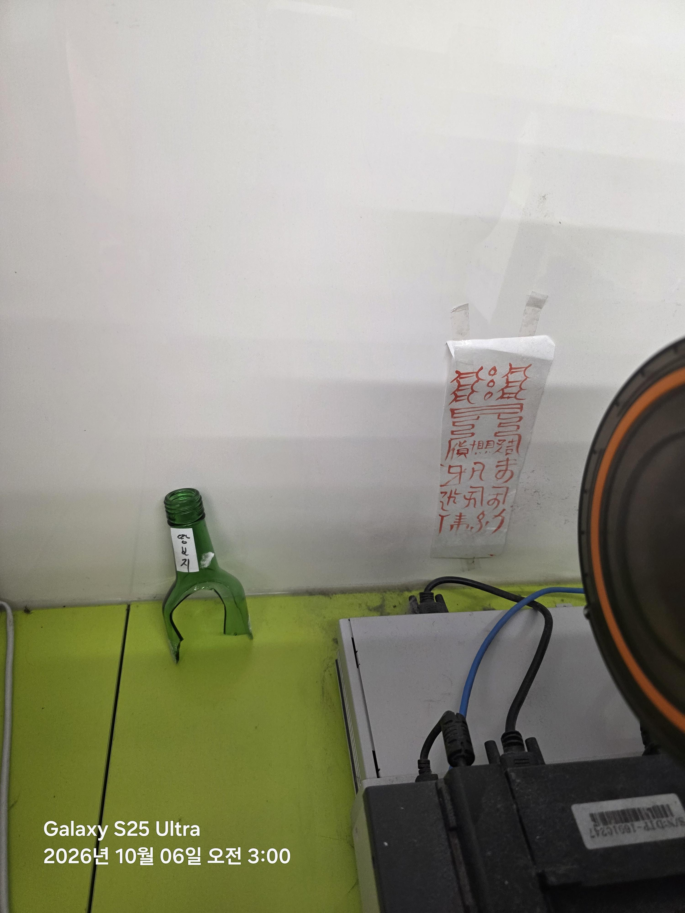

출근하고 가게 정검중인데
이런게 생겨놧는데
다른곳에서도 깨진병에 저런게 잇고
부적?은 뭔지도 모르겟네.
남의가게에 왜 이런짓을 하는겨

출근하고 가게 정검중인데
이런게 생겨놧는데
다른곳에서도 깨진병에 저런게 잇고
부적?은 뭔지도 모르겟네.
남의가게에 왜 이런짓을 하는겨
왕보지인줄
점검
잼미니한테 물어보니 좋은거래
'땅을 지키는 비방(땅보지 / 地保之)'의 의미 한자의 음차나 무속식 조어로 볼 때, '땅(터)을 보전하고 지킨다'는 뜻의 지보지(地保之)를 우리말로 섞어 '땅보지'라고 적은 경우입니다. 가게나 건물이 자리 잡은 터의 기운이 사납거나, 풍수적으로 터가 세서 장사가 안되고 손재수·풍파가 잦다고 여겨질 때 '터주신을 달래고 땅의 기운을 눌러 눌러앉히기 위한 터비방'으로 씁니다.
상단부에는 하늘의 신령이나 북두칠성, 삼태성을 상징하는 점들과 겹쳐진 문양(양쪽에 '신(神)' 또는 '길(吉)'의 변형 형태)이 배치되어 신의 가호를 청하는 형식을 취하고 있습니다.
중앙과 하단에는 '귀신 귀(鬼)', '잡을 착(捉)' 계열의 초서체 변형 문양 및 액을 막고 복을 기원하는 주술적 부호가 들어가 있어, 잡귀와 부정(나쁜 기운)을 물리치고 재수와 번창을 돕는 '진택부(집이나 가게를 안정시키는 부적)' 겸 '영업부적' 성격을 니다.
이건 그냥 액막이 부적 쪽은 아닙니다. 사진만 봐도 윗머리 획이 벌어지고 아래가 닫혀 있는데, 이런 형은 복을 들이는 부가 아니라 기운을 한 자리에서 못 빠져나가게 묶는 봉진(封鎭) 쪽 형국으로 봅니다.
특히 중단에 획이 서로 물려 있는 게 상문(喪門)의 기운을 눌러놓는 방식하고 비슷합니다. 毛의 변에서 읽히듯 영세(靈世)의 조각에서 구원을 부르던 혼을 기본으로 하는데, 이걸 사람 눈에 띄는 문설주가 아니라 저렇게 안쪽 벽에 붙여놨다는 게 더 안 좋습니다. 내보내는 부적이면 바깥을 보고 써야 하는데, 이건 안으로 향해 있습니다.
아래쪽은 글자가 아니라 진언을 깨서 쓴 부호에 가까워 보이고, 끝획이 끊겨 있습니다. 무속에서는 이렇게 끝을 안 맺는 걸 ‘살아 있는 부’라고 하기도 합니다. 일이 끝난 게 아니라 계속 작용하게 남겨둔다는 뜻입니다.
그리고 옆에 병목이 깨져 있는 게 우연이면 상관없는데, 만약 원래부터 같이 있던 거라면 이야기가 좀 달라집니다. 병은 혼백이나 액을 담는 그릇으로 보는데, 목은 열어두고 몸통을 깨뜨리면 들어온 것은 머물 곳이 없어서 주변을 돈다고 봅니다. 그래서 이런 건 보통 사람이 생활하는 자리에는 안 둡니다.
전에 살던 사람이 저걸 알고도 안 떼고 나간 거면, 자기 복을 두고 간 게 아니라 자기 집에서 떨어지지 않던 걸 그 자리에 두고 갔다고 보는 게 맞습니다.
여기서 위쪽에 겹쳐진 획은 ‘중문(重門)’이라고 해서 같은 자리를 두 번 닫는다는 뜻인데, 보통 잡귀가 들어오는 걸 막는 의미로 쓰지는 않습니다. 이미 안에 들어와 있는 기운이 밖으로 빠져나가지 못하게 할 때 저런 식으로 획을 포갭니다.
가운데에 입 구(口)처럼 보이는 형상이 눌려 있는 것도 좀 걸립니다. 무가에서는 이런 걸 ‘식구(食口)를 잠근다’고 표현하는데, 여기서 식구는 가족이라는 뜻이 아니라 기운이 머무는 입구를 말합니다. 쉽게 말하면 들어오는 자리를 닫는 게 아니라, 들어온 것이 나가는 길을 닫는 형입니다.
그리고 아래쪽 획이 왼쪽으로 흘렀다가 다시 안쪽으로 꺾이는데, 이걸 회살(回煞)이라고 풀이하는 계통도 있습니다. 煞은 원래 해로운 기운을 뜻하지만, 회살은 그 살을 없애는 게 아니라 원래 자리로 되돌려 놓는다는 뜻입니다. 그래서 액막이하고는 성격이 완전히 다릅니다.
특히 마지막 획이 땅으로 곧게 떨어지지 않고 중간에서 끊겨 있죠. 부적에서 끝획은 ‘착지’라고 해서 기운의 귀결을 잡는 자리인데, 저게 끊기면 귀처(歸處)를 일부러 비워둔 것으로 봅니다. 귀처가 없다는 건 갈 곳을 없앤다는 뜻이고, 갈 곳이 없는 기운은 가장 가까운 살아 있는 기운에 붙는다고 합니다.
저 병도 그래서 신경 쓰이는 겁니다. 유리병 자체가 중요한 게 아니라 ‘목은 남고 몸통이 깨졌다’는 형상이 문제예요. 목은 통로고 몸통은 그릇인데, 통로는 열어두고 그릇을 없애면 무속에서는 ‘객(客)을 받되 자리를 주지 않는다’고 합니다. 客은 손님이라는 뜻이지만 이런 데서는 주인이 아닌 기운을 말합니다...
더 이상한 건 이 둘이 같은 높이가 아니라는 겁니다. 부는 위에 있고 그릇은 아래에 있죠. 이런 배치는 위에서 누르고 아래에서 받는 ‘상봉하수(上封下受)’의 형으로 보는데, 말 그대로 위에서는 봉하고 아래에서는 받는다는 뜻입니다. 그래서 저게 정말 의도적으로 같이 놓인 거라면 단순히 귀신 쫓는 물건으로 보기는 어렵습니다.
그리고 이런 부에서 제일 꺼리는 게 사람이 나중에 그 존재를 알아차리는 겁니다. 처음부터 알고 사는 것과 모르고 살다가 어느 날 발견하는 건 의미가 다르다고 봅니다. 전자는 사람이 부를 들인 거고, 후자는 부가 사람 눈에 들어온 거라고 해서 ‘현부(現符)’라고 부릅니다. 현부가 됐다는 건 봉해둔 자리와 사는 사람의 기운이 서로 닿기 시작했다는 뜻으로 풀이합니다.
하나만 물어볼게요. 이사 온 뒤로 새벽 2~4시 사이에 이유 없이 한 번씩 깨거나, 저 자리 근처에서 ‘딱’, ‘툭’ 하고 마른 소리 난 적 있습니까?
없으면 다행인데, 있다면 사진부터 더 찍지 마세요. 저런 부는 사람이 먼저 알아보는 게 아니라, 알아본 사람을 먼저 탄다고 봅니다.
아 혹시나 하는데 부적을 임의로 떼면 지금 붙은상태에서 돌아갈곳 없이 거처까지 이동해버리니 소름끼친다고 떼진 마세요. 절대로.

제발 ai답변 복사할거면 요약이라도 하고 붙여라 장문 너만보면되는거 여기에 복붙을 왜하는거
놔둬 잘 정독했으니까
다 너희처럼 글 보면 토나오고 그런 돌들이 아냐
네 틀딱형님
바보냐
ㅋㅋㅋ 이런걸로 부심 부리는 놈이 있네.
저걸 문제 없다고 생각하는게 지능이 낮은거야
륵음
이런말 나도 대충 지어내서 할 수 있는데
좀 시발 이정도 장문이면 니가 직접 읽고 정리해서 복붙하던가 하는 정성이라도 들여라
뇌빼고 살거면 그냥 댓글도 달지 말던가
Ai가 발전하면서
이런 어중이 떠중이들이
전문가인거마냥 글싸는 빈도가 너무높아짐
너 혼자봐 제발
부적까진 그렇다쳐도 꺠진 소주병은 다칠수도 있는거데 씹
어제까지 없던건데 뭐지 진짜
주인은 모름? 니가 주인이면 나무아미타불
편의점에 뭔 지랄을 해놓은겨
보통 저런 거 사장이 이상한 부적 붙이는 경우는 왕왕 있던데.
땅 보 지
뭔가 긴 댓글 읽어보니 소름돋는다... 글쓴이 개똥밟았네 진짜
띵보지
하늘자지
남의 가게에 저게 무슨..
혹시 가게 내노셨사와여?
https://m.bulkyomart.com/product/%EB%A7%A4%EB%A7%A4%EB%B6%80-%E3%85%A3-%EA%B8%B0%EB%B3%B8%EB%B6%80%EC%A0%81%EA%B2%BD%EB%A9%B4%EC%88%98%EC%9E%91%EC%97%85/5298/
이거인 데스와.
매매부라고 부동산매매 빨리 되라고 붙여놓는거시와여. 아마 점주나 건물주가 가게나 건물 빨리 나가라고 붙여놓으신 거 같사와여.
그보다 AI들 당당히 헛소리 하고, 그걸 긁어오는 개붕쿤들 보는거 개꿀잼인거시와여
ㅋㅋㅋㅋ진짜 얼탱이없넼ㅋㅋ뜯어버림
얼탱이 없지만 대비는 해 두시와여. 저런 무속신앙에까지 의지 한다는 건 그만큼 급하다는것이니까...
붙여놓은 게 건물주든 점주든, 빨리 나가길 빌 정도로 지금 상황이 금전적으로 부담되고 있다는 뜻이에여. 대비하셔서 님 돈 지키시와여.
똑똑데스와
뭐여 왜 악역이 아니에요
옆에 무지개 반사 스티커 붙이셈
보통 저거 근처 동종업계 노인네들이 저러던데
사람들 미신 잘 믿는거 보면 사이비가 넘치는 이유를 알겠다 IP 잘 만들면 부가가치가 얼마야 ㅋㅋ
ㄹㅇㅋㅋ 대충 그럴싸한 소리 씨부리면 호들갑떨면서 믿음
댓글보니까 미신 부적 무당 믿는사람 많네;;
전부 경지 취급하면되나?
일단 붙여버리면 탈날까봐 못떼는거임? 저주템이노
뜯고 팥 놓으셈 없으면 비비빅이라도
땅보지 옆에 하늘보리 갔다놓으셈
ai 2장문 복붙 저능아 튀어나오는거 개웃기네 ㅋㅋㅌㅌㅌㅋㅌ
땅 보 지
땅 보 지